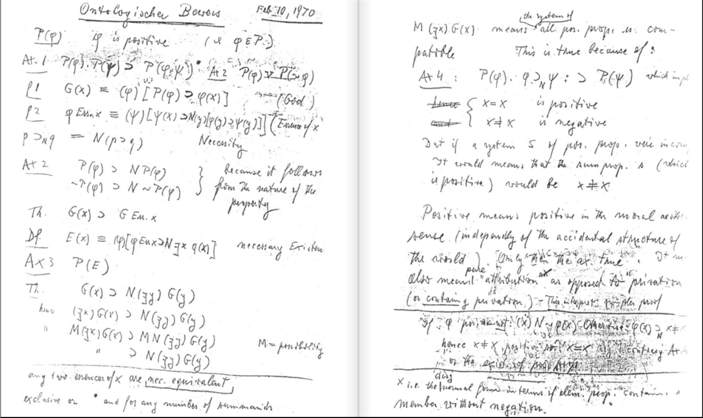
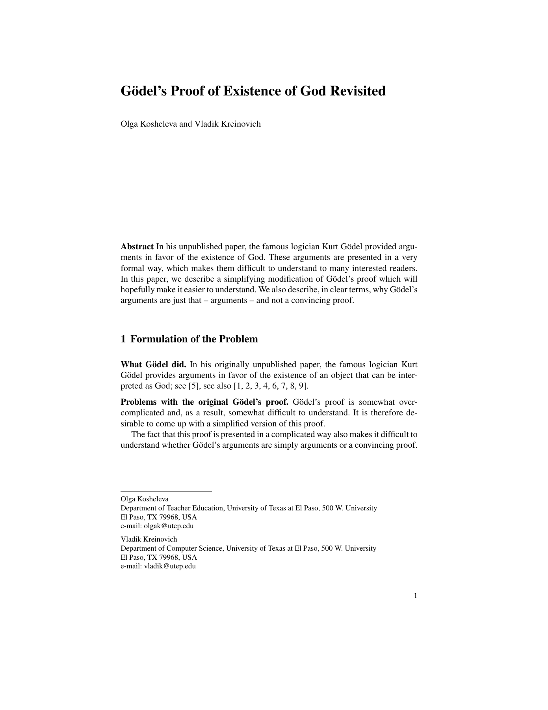
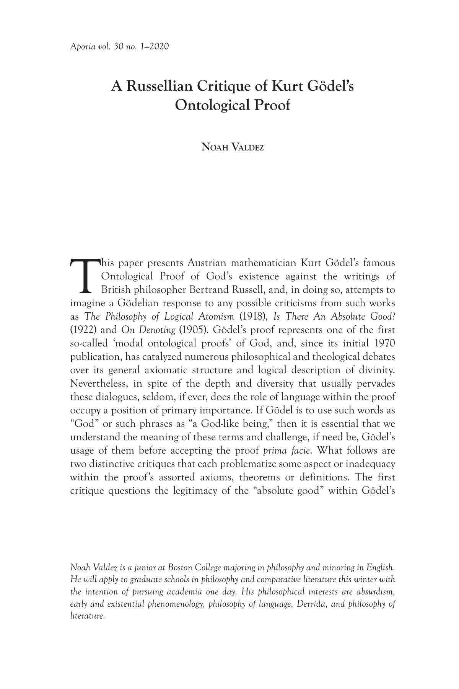
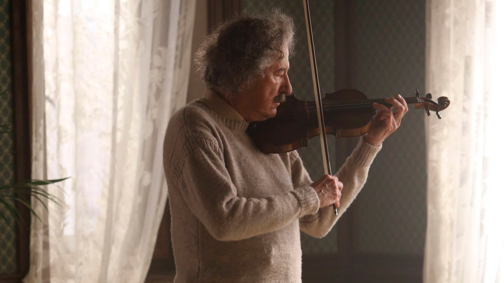

1:25:58 · 19 OPERE
Un cauto e modesto approccio alla prova ontologica di Kurt Gödel.
Il filo del discorso
Dr Divago propone un avvicinamento non specialistico alla prova ontologica di Kurt Gödel, prendendo come riferimento il manoscritto del 10 febbraio 1970. Il punto di partenza è l’interesse per una complessità che, a suo giudizio, la cultura contemporanea tende a espellere. Presenta il ragionamento come occasione per imparare a pensare e distingue, soprattutto nella conclusione, l’indagine logica da una professione di fede.
Leggi la sintesi completaRiduci la sintesi
La mancata pubblicazione in vita viene collegata al timore di etichette religiose; questo contesto non autorizza però ad attribuire con certezza ogni scelta o difficoltà personale di Gödel alla pressione accademica. Una lunga introduzione riguarda il rispetto dovuto ai grandi pensatori e la critica all’industria culturale. Il relatore richiama Marcuse, contesta l’uso conformistico della revisione tra pari e giudica severamente alcune recenti letture di Gödel. Due testi sono riconoscibili: il lavoro di Kosheleva e Kreinovich, identificabile attraverso titolo e dipartimenti della University of Texas at El Paso, e un articolo di Aporia del 2020, probabilmente quello di Noah Valdez, dal quale ricava un’esposizione simbolica. Le loro tesi vanno valutate nel merito degli argomenti, senza assumere che titolo professionale o distanza dalla statura di Gödel provino l’errore di una critica. Anche i giudizi su una biografia non nominata e sulla rappresentazione televisiva di Einstein restano valutazioni del relatore. Il percorso torna ad Anselmo e al rapporto fra concetto ed esistenza. Dr Divago presenta l’argomento dell’ente perfettissimo e ricorda l’obiezione kantiana attraverso l’esempio dei talleri. Il problema non consiste semplicemente nel non trovare una moneta immaginata in tasca: Kant distingue il contenuto di un concetto dall’affermazione che un oggetto corrispondente esista. Il confronto apre la domanda sui limiti della dimostrazione, anziché chiudere il dibattito con un argomento d’autorità. La digressione biblica introduce una dimensione diversa. Nel nome divino di Esodo il relatore privilegia la lettura futura, legata a promessa e alleanza, e richiama Giobbe per sottolineare la distanza fra prospettiva umana e creazione. L’episodio del nome appartiene al roveto di Esodo 3; la formula secondo cui Dio non è un uomo, riferita nel parlato a Isaia, trova invece un riscontro particolarmente vicino in Numeri 23:19. La tesi di un divino oltre esistenza e realtà ordinarie è un’interpretazione teologica di Dr Divago, non un risultato della logica formale. Analogamente, la scommessa di Pascal serve nel suo discorso a contrapporre finito e infinito, senza dimostrare da sola l’esistenza divina o l’irrazionalità di chi non condivide quella scelta. La parte centrale presenta alcune nozioni del manoscritto: proprietà positive, essere simile a Dio, essenza ed esistenza necessaria. Dr Divago scrive e commenta simboli che la trascrizione automatica restituisce solo in parte; non è quindi possibile trattare le formule nella trascrizione automatica come una trascrizione affidabile della lavagna. La positività è un predicato sulle proprietà, non il semplice valore vero di una proposizione né un segno aritmetico. L’essere God-like viene definito attraverso il possesso di tutte le proprietà positive; le ulteriori conclusioni dipendono dalle definizioni, dagli assiomi adottati e dal sistema modale utilizzato. Il relatore insiste sulla non contraddizione e privilegia la possibilità dell’ente God-like come approdo dell’esposizione. Occorre distinguere questo esito divulgativo dalla versione completa e dalle sue varianti. La sola assenza di una contraddizione individuata non basta a provare un’esistenza nel mondo. Inoltre, l’analisi formale del manoscritto originale rileva un problema nella definizione di essenza, modificata da Scott; nelle varianti coerenti la conclusione può riguardare l’esistenza necessaria, sempre relativamente agli assiomi. La validità di una derivazione non dimostra automaticamente la verità delle premesse o l’identità fra l’ente formalmente definito e il Dio di una religione. Il tema degli assiomi si allarga alla geometria, a Newton e ai concetti primitivi. Per Dr Divago, un modello razionale cresce quando una discrepanza spinge a rivedere l’interpretazione, non a rinunciare alla ricerca. Gli esempi richiedono però precisione: le geometrie euclidee e non euclidee sono sistemi distinti e il modello fisico pertinente non dipende soltanto dalla distanza di una galassia. Nel bastone apparentemente piegato nell’acqua è in gioco la rifrazione; il principio ottico riguarda il tempo o cammino ottico stazionario, non sempre il tragitto geometricamente più corto. L’apparenza può essere spiegata fisicamente senza che ogni intuizione del relatore costituisca già una dimostrazione. Segue una difesa del realismo matematico: Dr Divago ritiene che la matematica sia scoperta, perché le equazioni conducono a conseguenze non conosciute in anticipo. L’aneddoto sulla revisione del proprio Empty Campus illustra la differenza che egli avverte fra scrivere ciò che si sa e dedurre un risultato inatteso. È una posizione filosofica sullo statuto degli enti matematici; la sorpresa di una deduzione non decide da sola l’alternativa fra scoperta e invenzione. Nel finale entrano Russell, Whitehead, Cantor e l’assoluto. Il relatore usa immagini intuitive per distinguere un insieme dai suoi elementi e immaginare livelli dell’infinito. L’analogia dell’insieme delle mele non sostituisce però un argomento formale sull’insieme universale; il continuo indica la cardinalità dei reali e non l’ultimo elemento di una successione conclusa di aleph. Il ritorno al motore immobile e agli assiomi riporta infine alla domanda iniziale. Dr Divago conclude che il valore di queste prove sta, per lui, nell’esercizio razionale: imparare a esplicitare premesse, riconoscere i limiti delle immagini e interrogare la coerenza di ciò che si afferma.
I libri nel discorso

Prova ontologica (Ontologischer Beweis / Ontological Proof)
Note sul riferimento
Copertina: Facsimile delle due pagine manoscritte del 10 febbraio 1970, figura 1 nella ricerca Benzmüller–Scott 2025
Riproduzione autentica delle due pagine manoscritte, interamente vista; titolo tedesco, data e formule presenti. Non è una copertina, una ricostruzione moderna o la variante Scott. La didascalia editoriale attribuisce i diritti del manoscritto all’Institute for Advanced Study; tale attribuzione è conservata.
Riferimento ricavato dalla trascrizione automatica.

L’uomo a una dimensione
Note sul riferimento
Copertina: Einaudi, Piccola Biblioteca Einaudi, 1999
Copertina di un’edizione bibliografica dell’opera, con introduzione di Luciano Gallino. La citazione nel video resta probabile; questa edizione non vi è confermata.
Riferimento ricavato dalla trascrizione automatica.

Gödel’s Proof of Existence of God Revisited
Identificazione probabile
Note sul riferimento
Copertina: Preprint UTEP tr21-49, 2021, prima pagina; capitolo pubblicato nel 2023
Prima pagina autentica del preprint degli autori, con titolo, nomi e affiliazioni corrispondenti al parlato. Non è la copertina del volume collettivo Springer né una pagina della distinta edizione finale 2023.
Riferimento ricavato dalla trascrizione automatica.

A Russellian Critique of Kurt Gödel’s Ontological Proof
Identificazione probabile
Note sul riferimento
Copertina: Aporia 30.1, 2020, prima pagina dell’articolo, p.37
Prima pagina autentica del PDF ufficiale della rivista, con autore, titolo e annata. È una pagina interna del periodico, non la copertina di un libro e non il manoscritto di Gödel.
Riferimento ricavato dalla trascrizione automatica.

Genius: Einstein (prima stagione)
Identificazione probabile
Note sul riferimento
Copertina: Still ufficiale della première Tribeca 2017: Geoffrey Rush nel ruolo di Einstein
Immagine promozionale autentica fornita dal festival per Genius: Geoffrey Rush interpreta Einstein al violino. Non è una fotografia storica dello scienziato, una copertina DVD o un’immagine del film Schiemann. Il titolo del prodotto citato nel video resta probabile.
Riferimento ricavato dalla trascrizione automatica.

Proslogion
Identificazione probabile
Note sul riferimento
Copertina: BUR, catalogo editoriale 18 novembre 1992, ISBN 9788817169028, cura Lorenzo Pozzi, testo latino a fronte, con obiezioni di Gaunilone e risposta di Anselmo. Il catalogo corrente indica 240 pagine; il record bibliotecario della stampa descrive 225 pagine. Copertina corrente autentica del catalogo, non identificazione della stampa eventualmente usata nel filmato.
Immagine autentica dell’opera, controllata visivamente; l’edizione di riferimento non è attribuita al filmato.
Riferimento ricavato dalla trascrizione automatica.

Critica della ragione pura
Identificazione probabile
Note sul riferimento
Copertina: Adelphi · Gli Adelphi 85, 1995 · traduzione e cura Giorgio Colli
Immagine autentica dell’opera, controllata visivamente; l’edizione di riferimento non è attribuita al filmato.
Riferimento ricavato dalla trascrizione automatica.

Esodo
Note sul riferimento
Volume di riferimento: San Paolo, 2014 · Nuova Versione dai Testi Antichi · edizione di riferimento
Copertina della Bibbia completa, che contiene l’Esodo. Non è la copertina di un’edizione autonoma del libro biblico; la traduzione non è attribuita al contributo.
Riferimento ricavato dalla trascrizione automatica.
Giobbe
Note sul riferimento
Copertina del volume completo: San Paolo, 2014 · Nuova Versione dai Testi Antichi · edizione di riferimento
Giobbe è un libro della Bibbia. L’immagine mostra il volume completo San Paolo di riferimento, non un’edizione autonoma del singolo libro e non una versione identificata nella citazione.
Riferimento ricavato dalla trascrizione automatica.
Numeri
Identificazione probabile
Note sul riferimento
Copertina della Bibbia che comprende Numeri: San Paolo, 2014 · Nuova Versione dai Testi Antichi · edizione di riferimento
Copertina autentica del volume biblico completo, già presente in biblioteca. La voce riguarda il singolo libro dei Numeri; l’immagine non è una sua edizione autonoma e non indica la traduzione citata nel video.
Riferimento ricavato dalla trascrizione automatica.

Pensieri
Identificazione probabile
Note sul riferimento
Copertina: UTET · a cura di Bruno Nacci · 2021
Copertina autentica dell’edizione di riferimento, non attribuita all’esemplare del video.
Riferimento ricavato dalla trascrizione automatica.
Proverbi
Identificazione probabile
Note sul riferimento
Copertina della Bibbia che contiene Proverbi: San Paolo, 2014 · Nuova Versione dai Testi Antichi · edizione di riferimento
Copertina dell’intera Bibbia. Non rappresenta un’edizione autonoma dei Proverbi e non identifica l’edizione citata nel video.
Riferimento ricavato dalla trascrizione automatica.

Über formal unentscheidbare Sätze der Principia Mathematica und verwandter Systeme I (Sulle proposizioni formalmente indecidibili dei Principia Mathematica e di sistemi affini I)
Note sul riferimento
Copertina: Immagine della edizione inglese Dover, 1992, viii + 72 pagine, traduzione di B. Meltzer, introduzione di R. B. Braithwaite. Articolo originale: Monatshefte für Mathematik und Physik, 38, 1931, pp. 173–198.
Copertina autentica Dover scura con motivi di punti verdi, nome Kurt Gödel arancio e titolo inglese chiaro. È il volume della traduzione con introduzione, non la copertina del fascicolo originale del 1931 o il diverso Gödel, Escher, Bach. L’ISBN cartaceo e la bibliografia KIT identificano la ristampa 1992; non è assegnata al filmato una precisa edizione mostrata.
Riferimento ricavato dalla trascrizione automatica.

La Repubblica
Note sul riferimento
Copertina: Laterza · La Repubblica · edizione con testo a fronte di riferimento
Immagine associata all’ISBN di riferimento e controllata visivamente; edizione e traduzione non identificate come quelle citate o lette nel video.
Riferimento ricavato dalla trascrizione automatica.

What Is a Woman?
Note sul riferimento
Immagine ufficiale del documentario, 2022: Immagine promozionale del documentario statunitense del 2022, regia Justin Folk, presentato da Matt Walsh, The Daily Wire. Fornita nella pagina ufficiale del produttore; nessun ISBN librario.
Fotografia promozionale ufficiale con Matt Walsh, occhiali e barba, in ambiente urbano. Non è la copertina di un libro, né una prova dell’integralità o neutralità delle interviste montate nel film. Il titolo individua un documentario politico con una propria impostazione editoriale, distinto dalle audizioni del Senato citate separatamente.
Riferimento ricavato dalla trascrizione automatica.

Sacred Emily
Identificazione probabile
Note sul riferimento
Copertina della raccolta: COPERTINA DELLA RACCOLTA Geography and Plays, University of Wisconsin Press, ISBN 9780299134747, introduzioni di Sherwood Anderson e Cyrena N. Pondrom. Edizione del 1993 e ristampa datata 5 dicembre 2012 nel catalogo del libraio, 434 pagine; Google Books conteggia 447 pagine. Il testo originale del 1922 contiene Sacred Emily, pagine 178–188.
Copertina autentica della raccolta Wisconsin con ritratto di Stein e titolo giallo; non copertina di una poesia pubblicata autonomamente. Il testo e il verso della rosa sono riscontrati nell’edizione integrale del 1922, non nella raccolta Tender Buttons.
Riferimento ricavato dalla trascrizione automatica.

The Empty Campus
Note sul riferimento
Copertina: Lulu · edizione inglese di riferimento
Immagine associata all’ISBN di riferimento e controllata visivamente; edizione e traduzione non identificate come quelle citate o lette nel video.
Riferimento ricavato dalla trascrizione automatica.

Principia Mathematica
Note sul riferimento
Copertina del volume I: Cambridge University Press · copertina del volume I
Immagine autentica del volume I, titolo e autori leggibili. La voce bibliografica comprende l’opera in tre volumi, ma la fotografia non mostra un cofanetto completo. Non si assegna alla singol’immagine l’ISBN dell’insieme o una ristampa non accertata.
Riferimento ricavato dalla trascrizione automatica.

Metafisica
Identificazione probabile
Note sul riferimento
Copertina: Bompiani · Il pensiero occidentale · 2004 · a cura di Giovanni Reale
Copertina autentica di riferimento, controllata visivamente. L’edizione non è identificata come quella usata nel video.
Riferimento ricavato dalla trascrizione automatica.